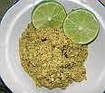

Sambal Andaliman

BAHAN-BAHAN
- 100 gr andaliman
- 100 gr cabe rawit hijau
- 60 gr bawang merah
- 50 gr bawang putih
- 30 gr gula putih
- 10 gr garam
CARA MEMBUAT
- semua bahan di goreng, kecuali biji andaliman
- kemudian haluskan bersama-sama hingga halus
- bubuhi garam dan gula putih
- sambal andaliman siap di sajikan